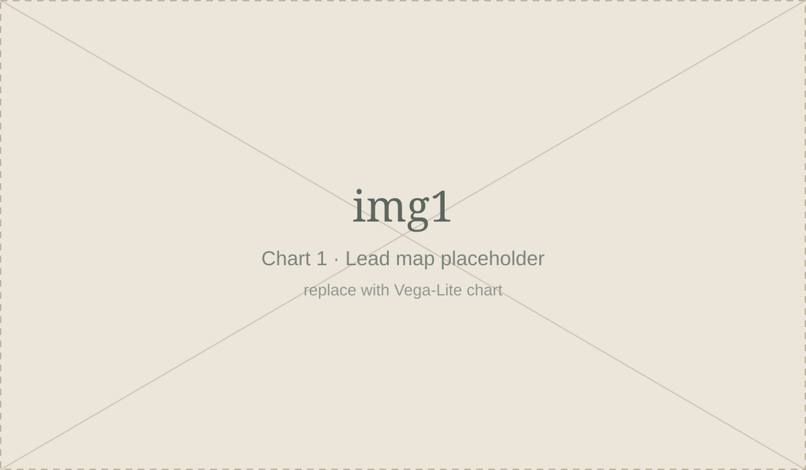

01
[Section heading: the big picture]
[One or two sentences that set up the question this section answers.]
[Chart 1 headline: state the takeaway, not just the topic]
[What is measured, where, and when]

How to read this: [One sentence on what colour/size/position means. Mention any interaction, e.g. “hover for details”.]
Source: [Dataset name], [Publisher], [Year]. [URL] · Vega-Lite JSON
[Narrative paragraph: explain what the reader just saw. Keep sentences short, avoid jargon, and define any specialised term the first time you use it.]
[Annotation heading]
[A short note that points at something specific in the chart above.]